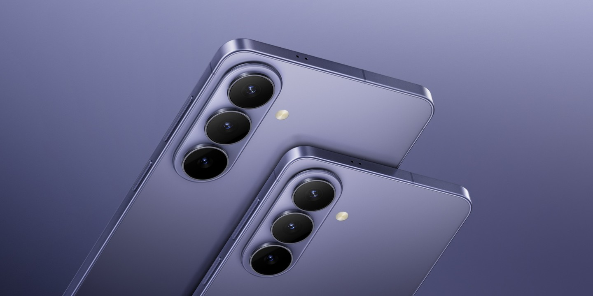
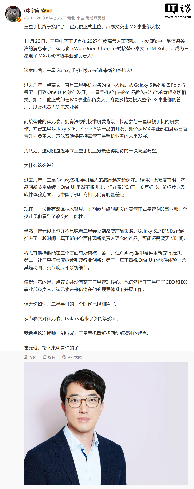
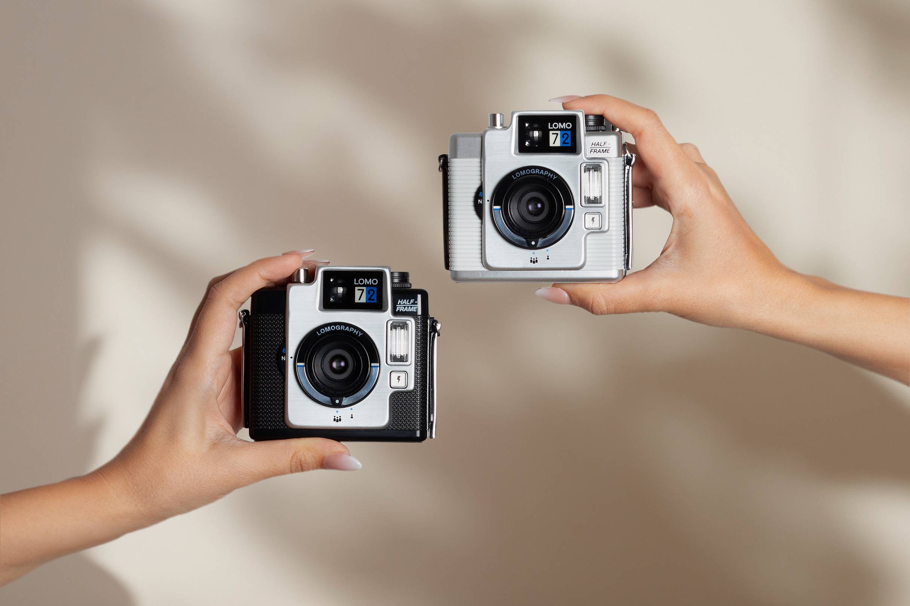
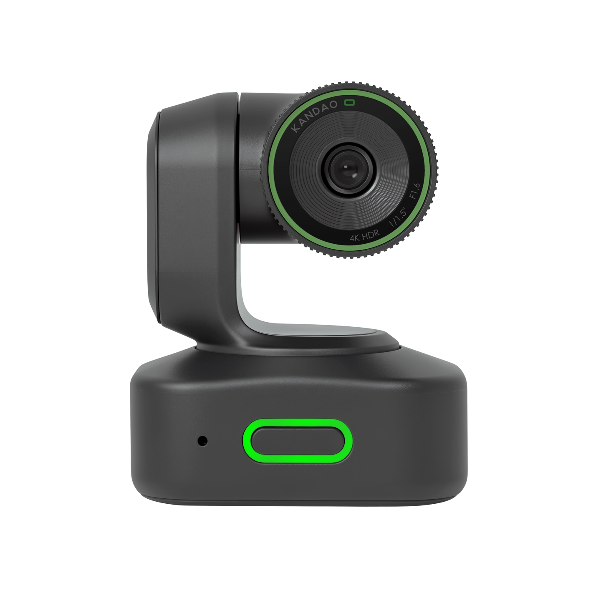
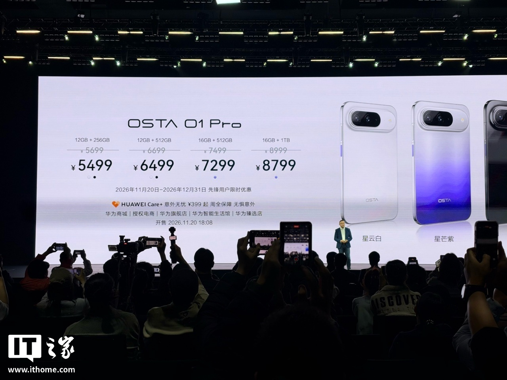
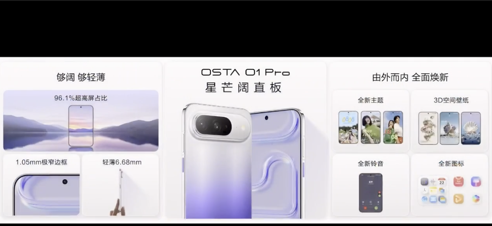
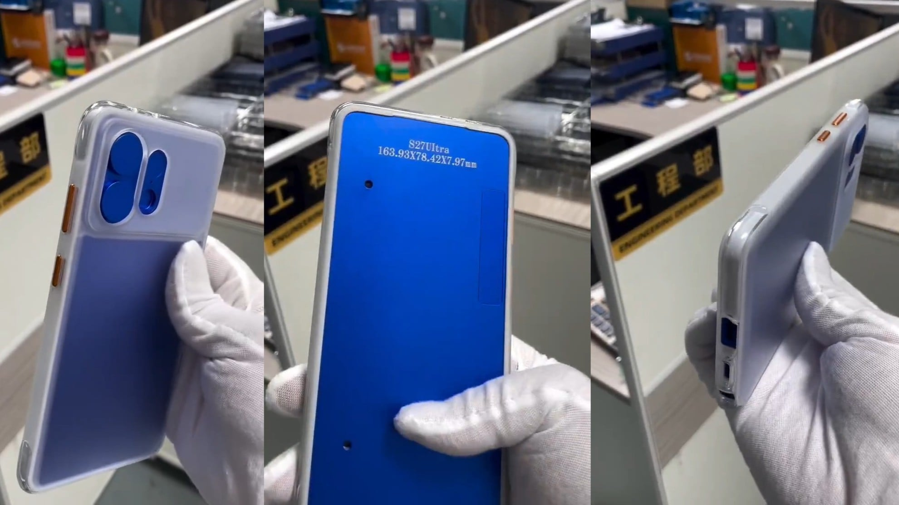

뉴스
기술의 변화, 매일 한눈에.
카메라 · 스마트폰 · AI, 해외 테크 소식을 모아 전합니다.
최근 발행2026-11-21
새로 들어온 소식

최신 뉴스
전체 4,508개 기사3,000~6,000위안대 스마트폰 선택 가이드: 핵심 파라미터 4가지로 실패 피하기

Samsung 전자 비반도체 부문 메모리 평균 구매가, 올해 1~9월 전년 동기 대비 263% 폭등

Samsung 스마트폰 사업부 수장 교체! 최원준 MX 사업부장 공식 취임, 노태문 사장 MX 사업부 권한 이양

Oppo Reno 17 및 Reno 17 Pro, 8000mAh 배터리, 200MP 카메라 탑재하고 첫 판매 시작

Motorola Razr Flex 와이드 폴더블 스마트폰 렌더링 유출: 그린/베이지, 내부 6.9인치/외부 5인치 스크린

로모그래피, 멀티 코팅 유리 렌즈 탑재 레트로 하프 프레임 필름 카메라 Lomo72 출시

Kandao Technology, Focus 시리즈 카메라 출시: 1/1.5인치 CMOS, 4K 30fps 녹화 지원

JP모건: Apple iPhone 18 Pro/iPhone Duo 등 구매 계획 응답자 중 97% 연말까지 구매

DJI 가격 인상 후, Insta360 Luna 시리즈 짐벌 카메라 가격도 인상될 것이라는 소식

5499위안부터, "AI를 위해 탄생한 최초의 HarmonyOS 스마트폰" Huawei 싱망 OSTA O1 Pro 바 타입 정식 출시

Huawei 스타라이트 OSTA O1 Pro 바 타입 스마트폰, 첫 출시 가격 5,499위안부터 시작

Huawei 싱망 OSTA O1 Pro 스마트폰 외관 공개: 16:9.5 비율 1.5K LTPS 바 타입, 화면 점유율 96.1%
4,999위안부터, 18시 08분부터 구매 가능: Huawei OSTA 싱망 O1 Pro HarmonyOS AI 스마트폰 첫 출시 기념 1,588위안 상당의 안심 패키지 추가 증정

화웨이 OSTA O1 Pro, 16:9.5 와이드 디스플레이, 200MP 카메라, 7,000mAh 배터리 탑재하고 출시

독점 기능 확인: Huawei Mate 시리즈 플래그십 스마트폰, OSTA 샤오싱망, AI 스크린 등 기능 '무관'

Galaxy S27 Ultra 카메라 디자인, 더미 유닛마다 달라 미스터리로 남아

벤큐 AK900ST AI 골프 프로젝터 출시: 6000루멘 밝기, 단초점 렌즈 디자인, 52999위안

Apple 20주년 기념 iPhone 렌더링 이미지 유출: 전체가 유리처럼, 쿼드 커브드 디스플레이로 '베젤리스' 느낌 선사
iPhone에서 안드로이드 앱을 실행할 수 있는 가상 머신 Andarium, Apple App Store에서 즉시 삭제

Samsung One UI 9.5 날씨 앱, AI 업그레이드 준비 중: 출발 전 목적지 날씨 확인 알림
Samsung 전자 고위 관계자: Neocloud 위험 제한적, AI 투자 실제 수요 기반
검색 결과가 없습니다
다른 검색어를 입력하거나 필터를 초기화해 보세요.